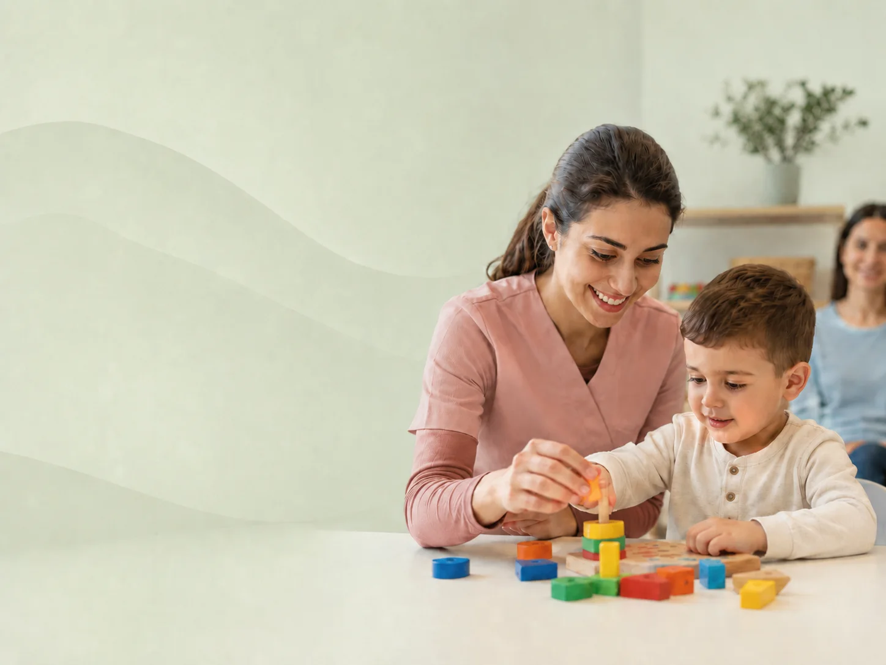
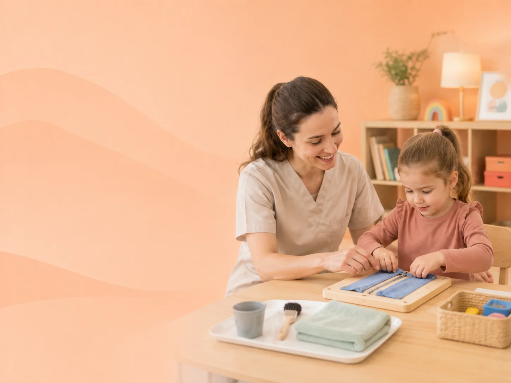
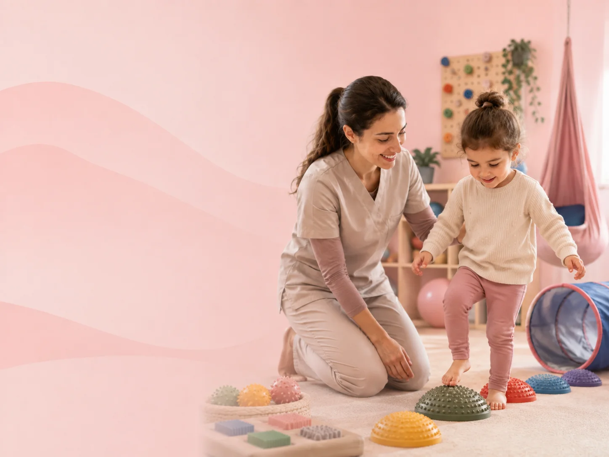
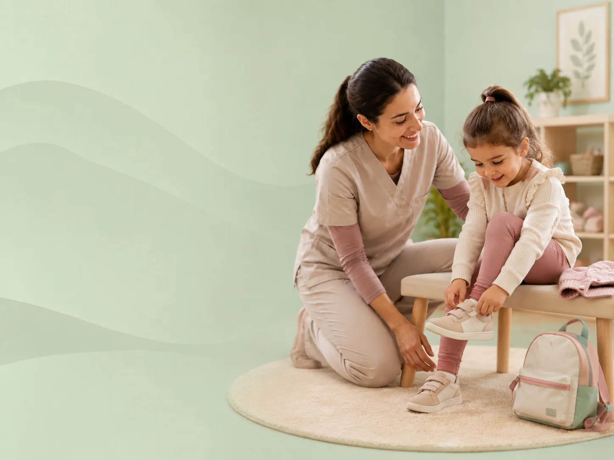
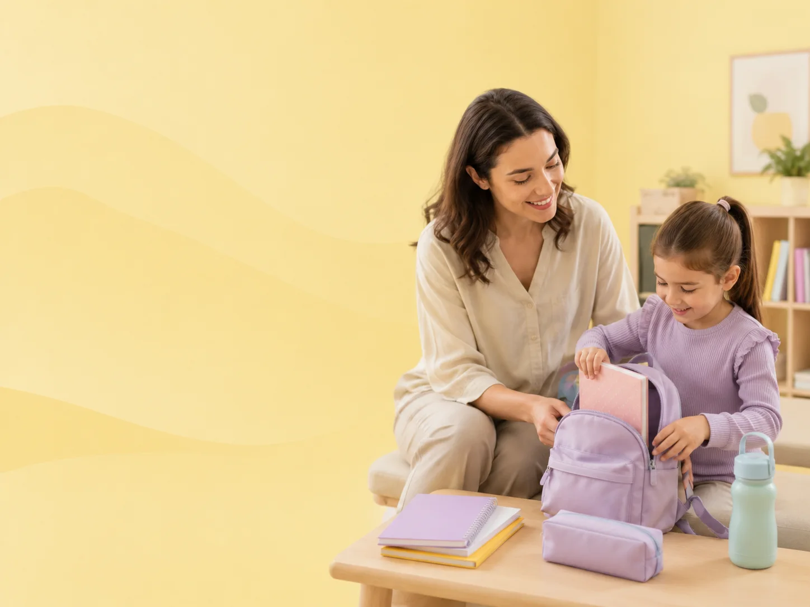
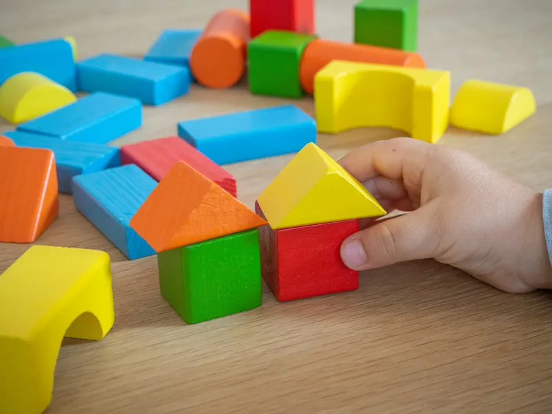
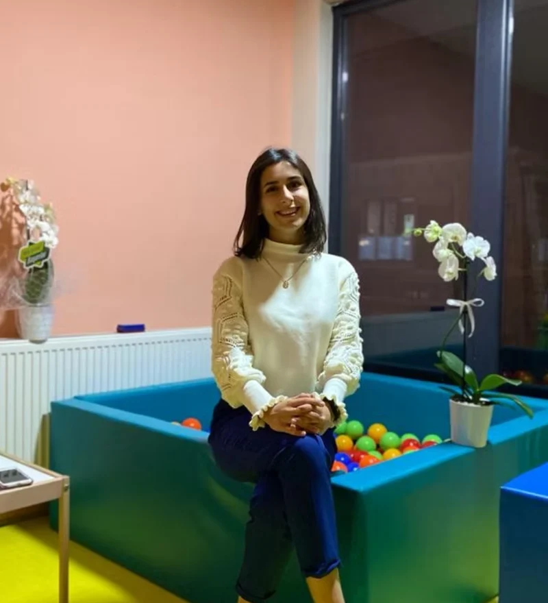
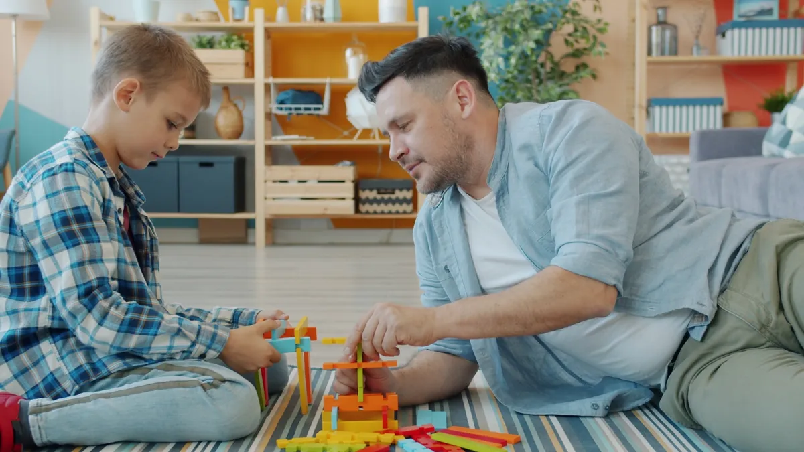
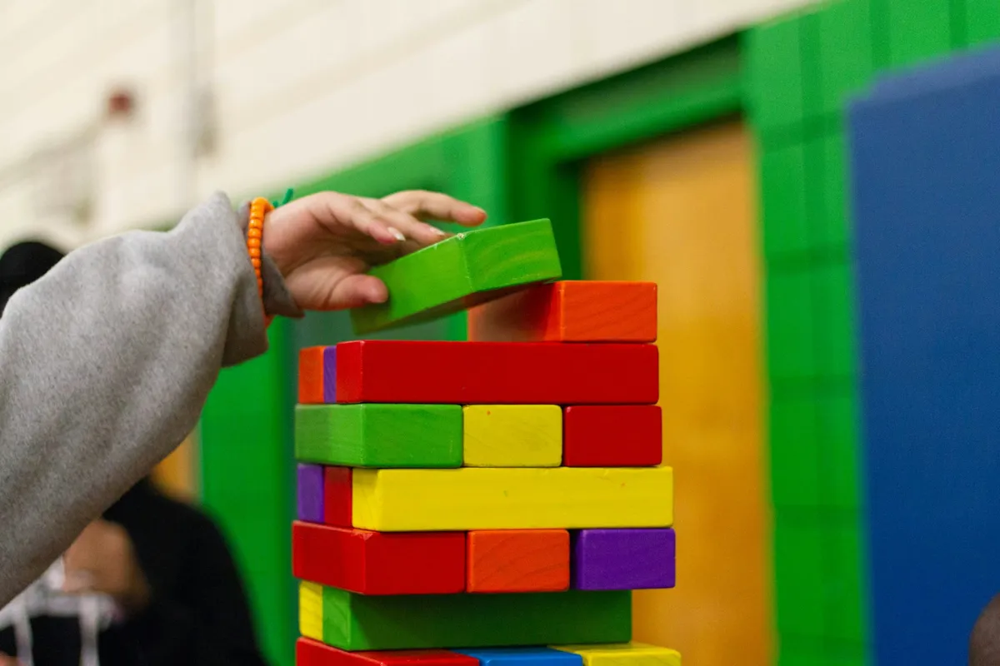
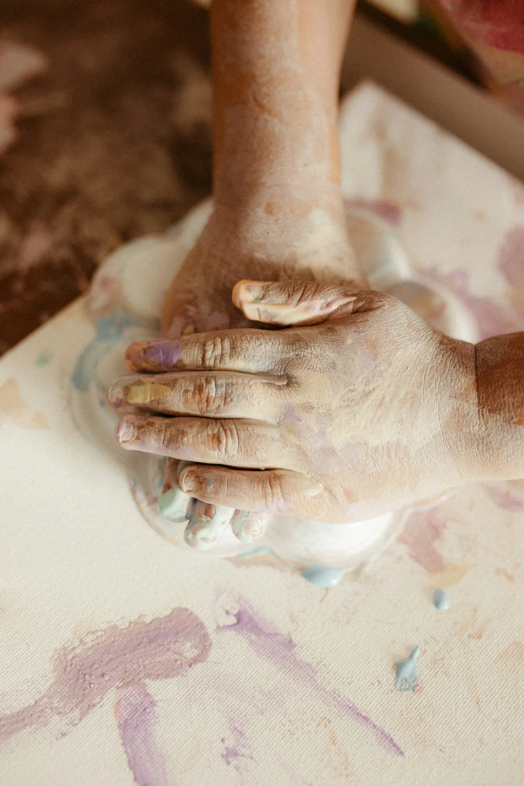

Ergoterapist • Şişli / İstanbul
Birlikte
Mutlu Yarınlara
Çocuğunuzun kendi gücünü keşfetmesine eşlik ediyorum. Oyunun içinden geçen, çocuğa ve aileye birlikte alan açan bir destek süreci.
-
Çocuğa özel
bireysel program -
Oyunun içinden
geçen çalışma -
Aile eğitimi ve
ev programı -
Şişli'de
yüz yüze seanslar
Hangi konularda birlikte çalışıyoruz?
Her çocuk kendi hızında ilerler. Aşağıdaki başlıklar, ailelerin en sık dile getirdiği gözlemlerden oluşuyor. Listede kendinizi buluyorsanız konuşalım.
Hizmetler
Her süreç değerlendirmeyle başlar; program çocuğunuzun ihtiyacına göre şekillenir.

Ergoterapi Günlük hayattaki katılımı anlamlı ve amaca yönelik etkinlikler aracılığıyla destekler. Detaylı bilgi →
Duyu Bütünleme Duyusal bilgiyi işleme biçimini anlayıp çevresine daha rahat uyum sağlamasına eşlik eder. Detaylı bilgi →
Öz Bakım Becerileri Giyinme, beslenme ve kişisel bakımda yaşına uygun bağımsızlığı güçlendirir. Detaylı bilgi →
Günlük Yaşam Aktiviteleri Ev, okul ve sosyal ortamdaki rutinlerde katılımı ve bağımsızlığı artırmayı hedefler. Detaylı bilgi → Çocuk ve Aile Danışmanlığı
Ebeveynin evde uygulayabileceği somut yaklaşımları birlikte belirler.
Detaylı bilgi →
Çocuk ve Aile Danışmanlığı
Ebeveynin evde uygulayabileceği somut yaklaşımları birlikte belirler.
Detaylı bilgi →
Hangisi bize uygun, emin değilim
Çok sık duyduğum bir cümle. Doğru başlığı seçmek sizin işiniz değil — ilk görüşmede birlikte belirliyoruz.
İlk görüşme için ulaşın →Nasıl ilerliyor
Süreci baştan
birlikte biliyoruz.
İlk görüşmeden gelişim takibine kadar her adımı sizinle planlıyorum — böylece ne olacağını merak etmek zorunda kalmıyorsunuz.
- Hazır paket yok, bireysel program var
- Aile sürecin merkezinde
- Hedefler açık, ilerleme düzenli gözden geçiriliyor

-
Adım 01
İlk görüşme
Gözlemlerinizi dinliyorum, sorularınızı yanıtlıyorum. Sürecin size uygun olup olmadığına birlikte karar veriyoruz.
-
Adım 02
Değerlendirme
Çocuğunuzu oyun ortamında gözlemliyor, gelişim alanlarını bütüncül olarak ele alıyorum. Sizin gözlemleriniz de en az benimkiler kadar belirleyici.
-
Adım 03
Bireysel program
Değerlendirme sonuçlarına göre çocuğunuza özel hedefler belirliyoruz. Hedefleri sizinle paylaşıyorum — hangi noktada olduğumuzu her zaman biliyorsunuz.
-
Adım 04
Seanslar
Oyunun içinden geçen, çocuğun keyif aldığı etkinliklerle çalışıyoruz. Çocuk oynadığını bilir; hedefleri oyunun içine ben yerleştiririm.
-
Adım 05
Aile eğitimi ve ev programı
Evde uygulayabileceğiniz etkinlikleri birlikte planlıyoruz. Asıl değişim seansta değil, günlük hayatın içinde oluyor.
- Çocuğunuza özel ev etkinlikleri
- Rutin ve ortam düzenleme önerileri
- İsterseniz okulla paylaşılabilecek notlar
-
Adım 06
Gelişim takibi
Belirli aralıklarla ilerlemeyi gözden geçiriyor, hedefleri güncelliyoruz. Yön değiştirmemiz gerekiyorsa bunu açıkça konuşuyoruz.

Merhaba, ben Aleyna Keskin
Ergoterapist olarak çocukların gelişim alanlarını destekliyor, ailelere bu yolculukta eşlik ediyorum. Çalışma biçimimin merkezinde tek bir soru var: çocuk kendi günlük hayatına nasıl daha çok katılabilir?
Bunun yolunun çocuğu bir masaya oturtmaktan değil, oyunun içinden geçmekten geçtiğine inanıyorum. Aileyi de sürecin dışında değil tam merkezinde konumlandırıyorum — çünkü çocuk haftanın yalnızca bir saatini benimle, geri kalanını sizinle geçiriyor.
Hakkımda daha fazlası →Ailelerden
Birlikte çalıştığımız ailelerin süreç hakkındaki görüşleri.
İlk görüşmede en çok şaşırtan şey, benim gözlemlerimin de dinlenmesi oldu. Kızımın sabahları neden zorlandığını birlikte konuştuk, evde deneyebileceğim iki üç şey belirledik.
Oğlum seanslara oyun oynamaya gittiğini sanıyor. Ben de arada ne çalışıldığını soruyorum, hep açıkça anlatılıyor. Bu şeffaflık bizi rahatlattı.
Kalabalık yerlerde yaşadığımız zorlanmayı anlatabilmek bile iyi geldi. Önerilen şeyler bizim düzenimize uyuyordu, o yüzden sürdürebildik.
Ailelere yönelik yazılar
Sık sorulan konuları, evde uygulayabileceğiniz önerilerle birlikte yazıyorum.

Ergoterapiye ne zaman başvurmalı?
"Biraz daha bekleyelim, belki geçer" ile "acaba geç mi kaldık" arasında sıkışan aileler için: hangi gözlemler bir görüşmeyi gerektirir, beklemek ne zaman makul?
Yazıyı okuyun →
Okul öncesi dönemde ince motor becerileri destekleyen 7 ev etkinliği
Kalem tutmayı kalemle çalışmak zorunda değilsiniz. Mutfakta, banyoda ve oyun köşesinde el becerilerini destekleyen, malzeme gerektirmeyen yedi etkinlik.
Yazıyı okuyun →
Duyu bütünleme nedir, çocuğumda nasıl fark ederim?
Etiketli kıyafeti çıkarmak isteyen, salıncaktan hiç doymayan ya da kalabalıkta bunalan çocuklar. Duyusal işlemlemenin ne olduğunu ve evde nelere dikkat edebileceğinizi anlattım.
Yazıyı okuyun →Sık sorulan sorular
Ergoterapi hangi yaş aralığındaki çocuklara uygundur?
Genellikle okul öncesi dönemden ergenliğe kadar geniş bir aralıkta çalışılabilir. Belirleyici olan yaş değil, çocuğun günlük hayattaki ihtiyacıdır. Uygunluğu ilk görüşmede birlikte değerlendiriyoruz.
Seanslar ne kadar sürüyor ve ne sıklıkta yapılıyor?
Seans süresi ve sıklığı, değerlendirme sonrasında çocuğunuzun ihtiyacına göre belirlenir. Sabit bir program dayatmıyorum; sıklık süreç içinde birlikte gözden geçiriliyor.
Ailenin sürece katılımı nasıl oluyor?
Aile sürecin merkezinde. Seanslarda çalıştığımız hedefleri sizinle paylaşıyor, evde uygulayabileceğiniz etkinlikleri birlikte planlıyoruz. Sorularınız için aramızda düzenli bir iletişim kanalı oluyor.
Değerlendirme süreci nasıl işliyor?
Değerlendirme, çocuğunuzu oyun ortamında gözlemleyerek başlar. Sizin gözlemleriniz de en az benimkiler kadar belirleyici. Sonucunda gelişim alanlarını ve birlikte çalışacağımız hedefleri sizinle paylaşıyorum.
Randevu nasıl alınır?
Telefonla arayarak, WhatsApp'tan yazarak veya iletişim formunu doldurarak ulaşabilirsiniz. Size en kısa sürede dönüş yapıyorum.
Seanslar nerede yapılıyor?
Şişli'deki çalışma alanımda, yüz yüze yapılıyor. Adres ve ulaşım bilgileri iletişim sayfasında.
Çocuğunuz için doğru adımı birlikte belirleyelim
Aklınızdaki soruları konuşmak için kısa bir görüşme yeterli. Size uygun zamanı birlikte planlayalım.